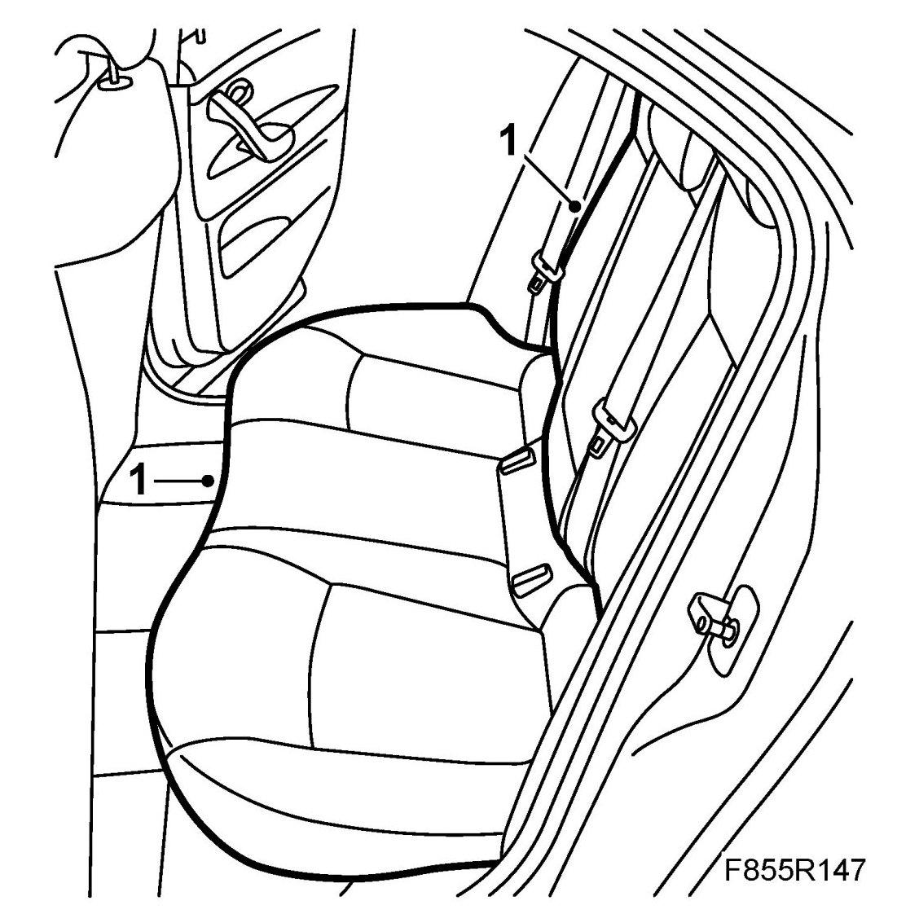
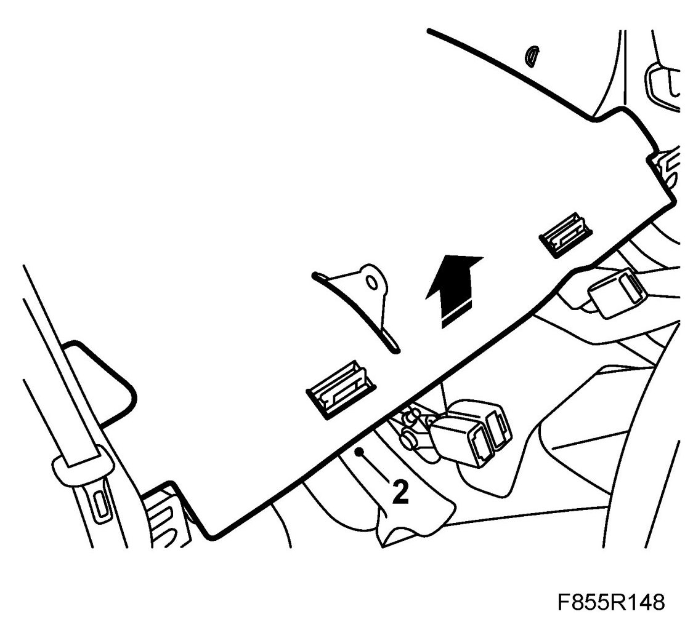
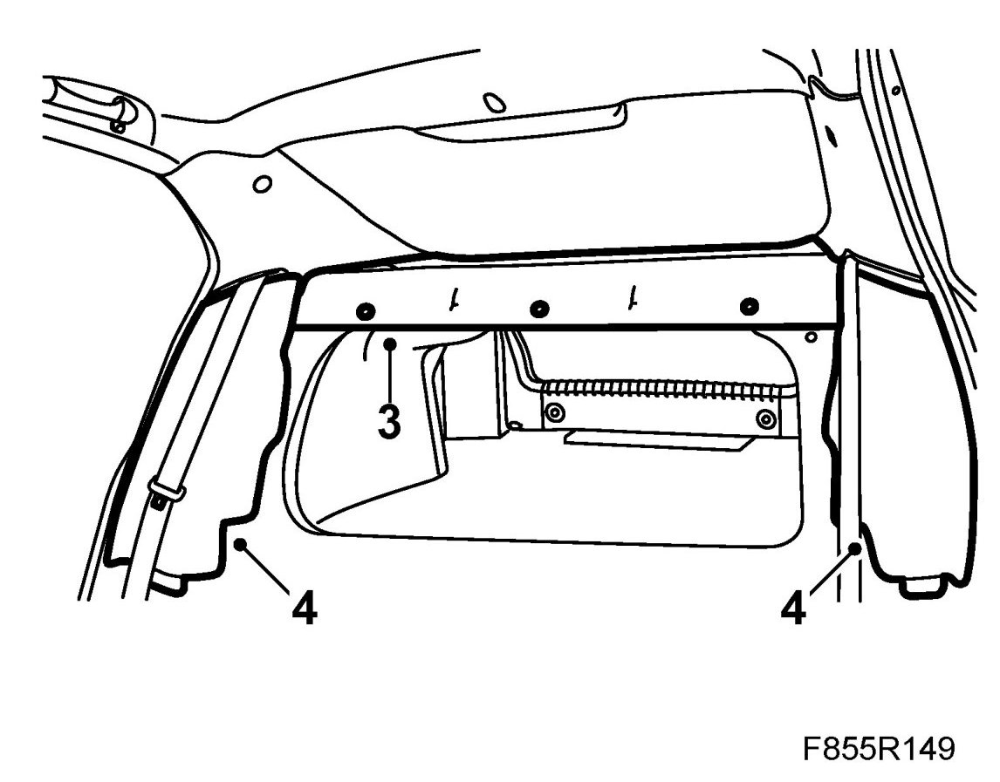
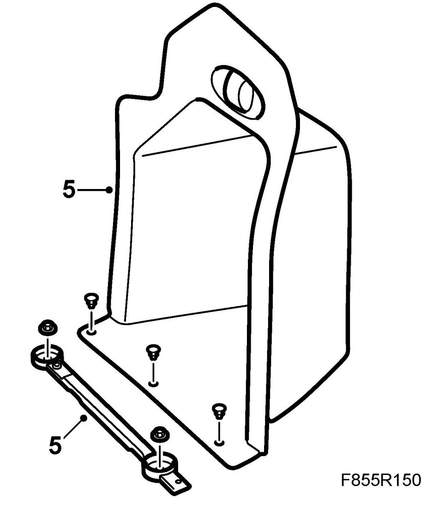
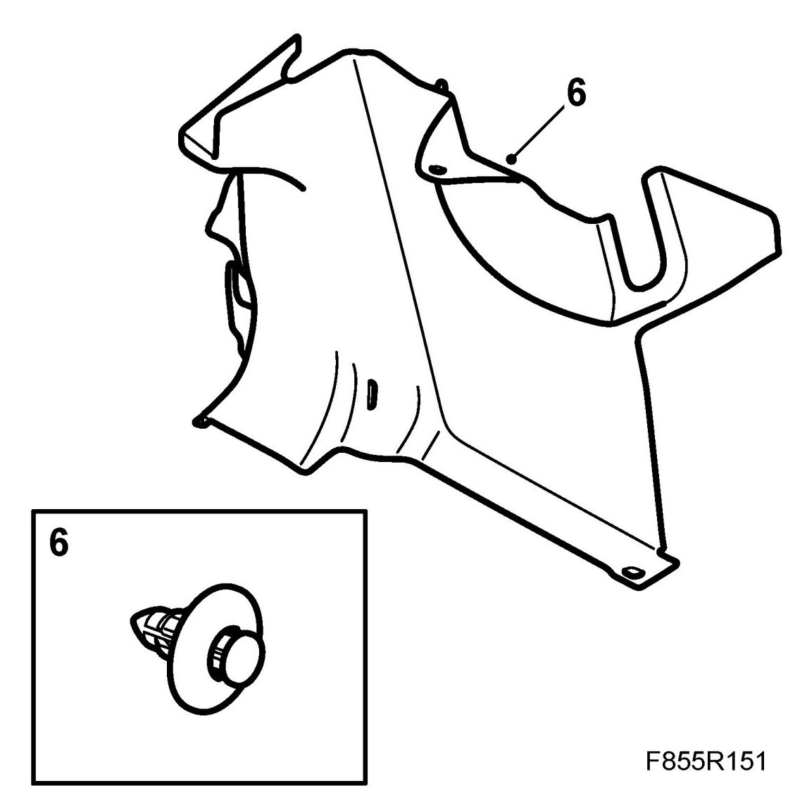
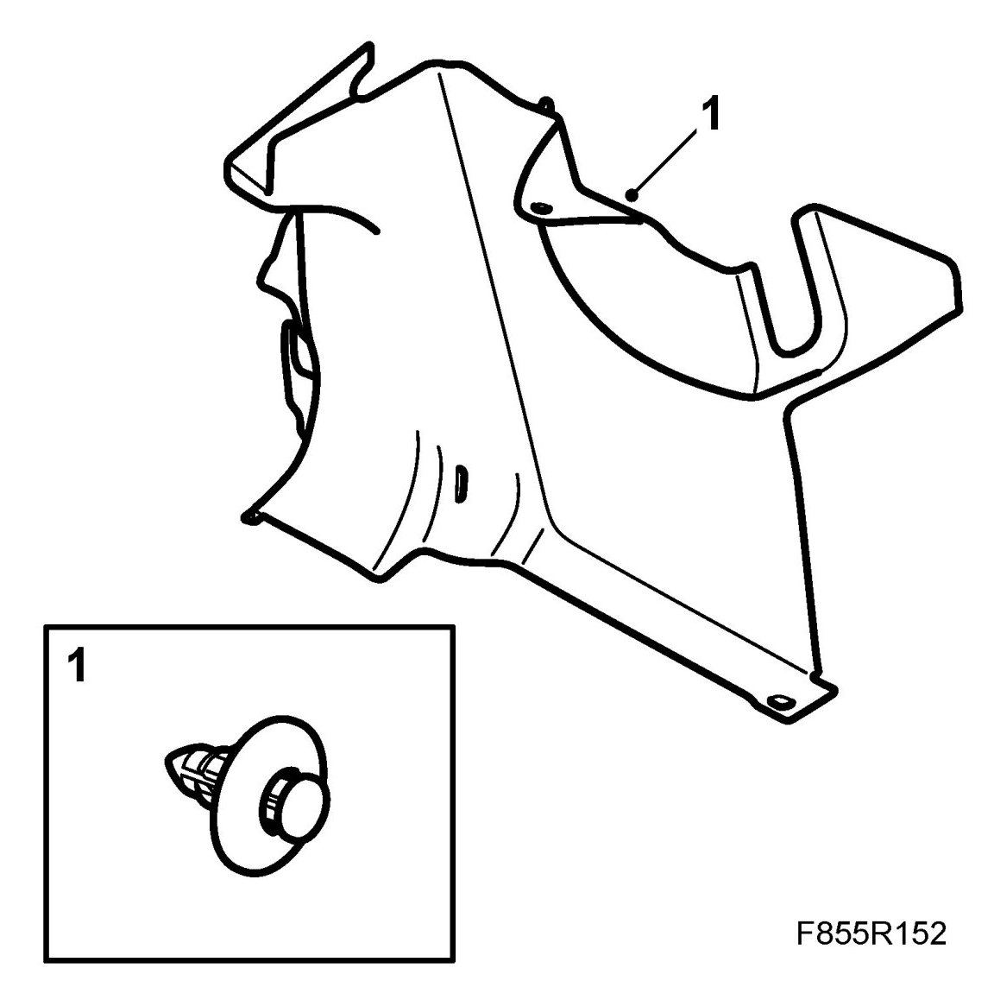
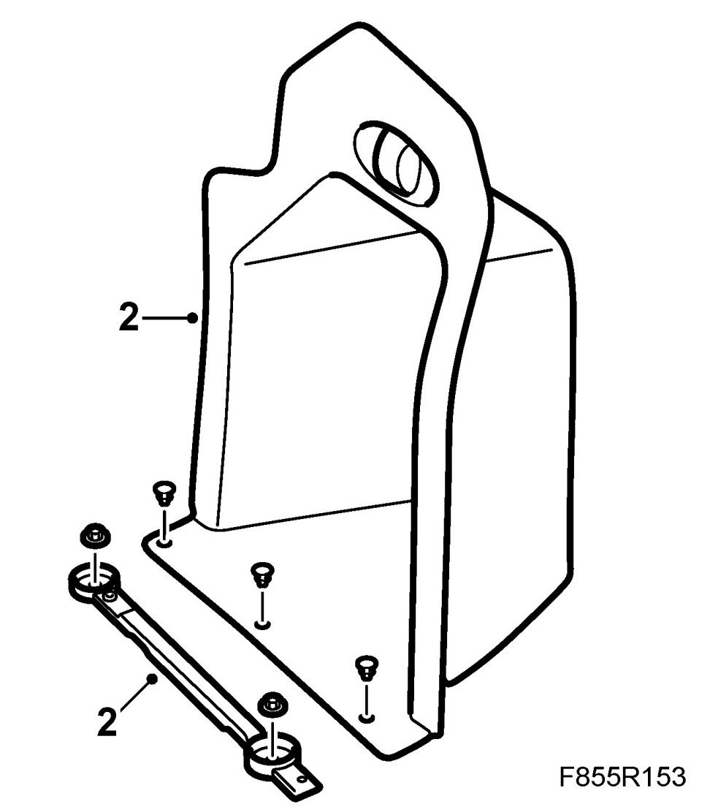
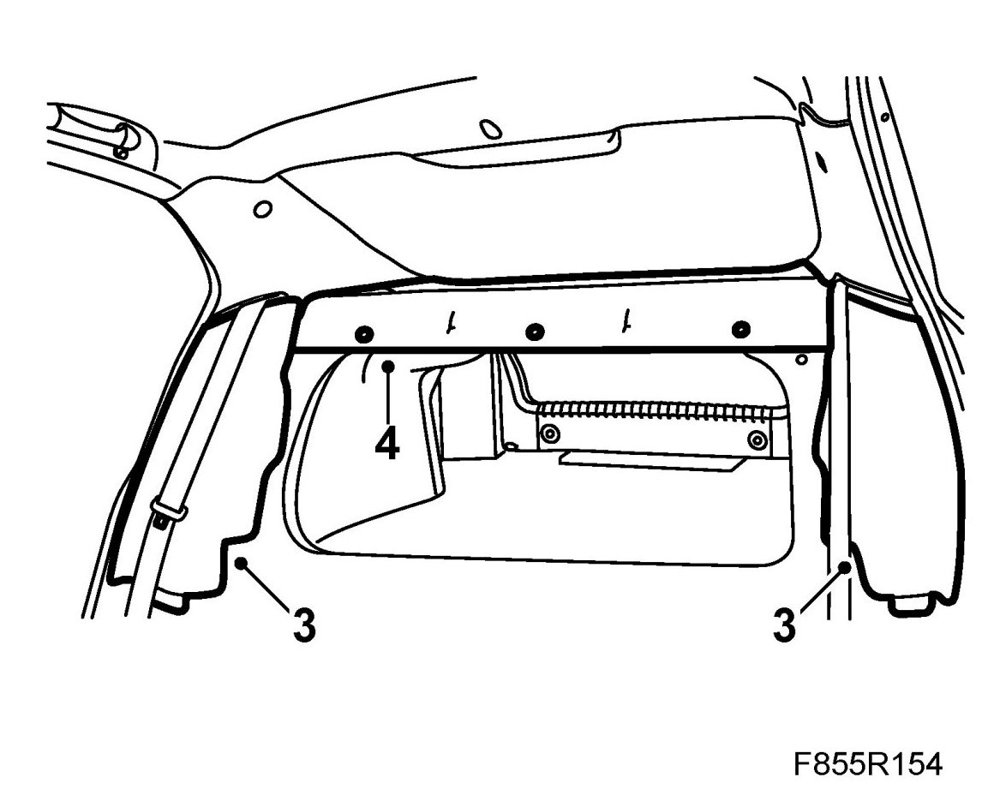
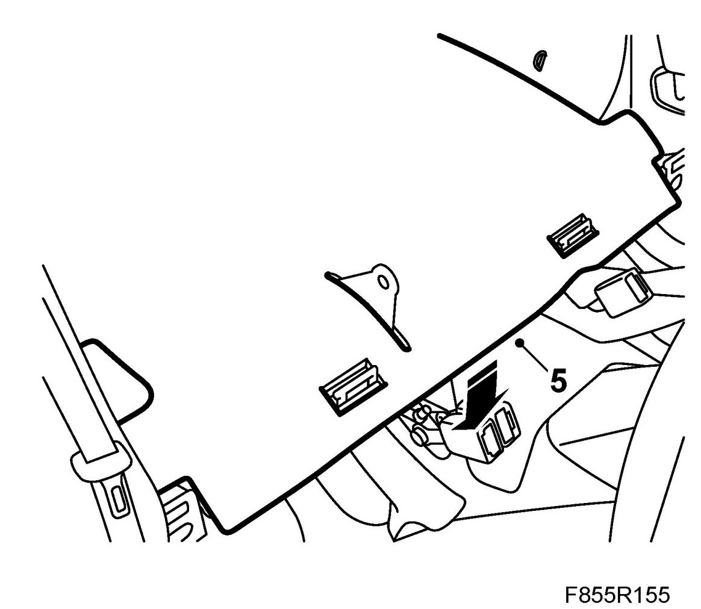
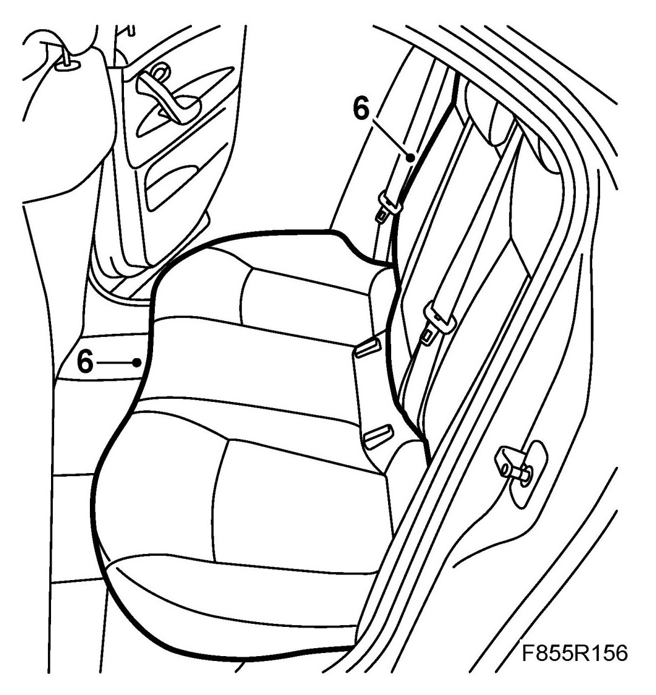

Luggage Compartment Trim, Side Trim, 4D
Luggage Compartment Trim, Side Trim, 4D
To remove
1. Remove the rear seat backrest.

2. Lift off the floor panel from the centre mounting of the rear back rests. Lift out the floor panel.

3. Remove the two-stage rivets from the parcel shelf.

4. Remove the Side bolsters.
5. Remove the clips which attach the luggage compartment inspection cover. Use the special tool 84 71 179 removal tool, clips. Remove the inspection cover.

6. Remove the rivets and clips from the luggage compartment side trim and remove the trim.

To fit
1. Position the luggage compartment side trim and fit the side trim clips and rivets.

2. Fit the luggage compartment inspection cover together with the associated clips.

3. Fit the Side bolsters.

4. Fit the two-stage rivets on the parcel shelf.
5. Lift in the floor panel. Make sure that the floor panel is correctly located over the centre mounting of the rear back rests.

6. Fit the rear seat back rest.
